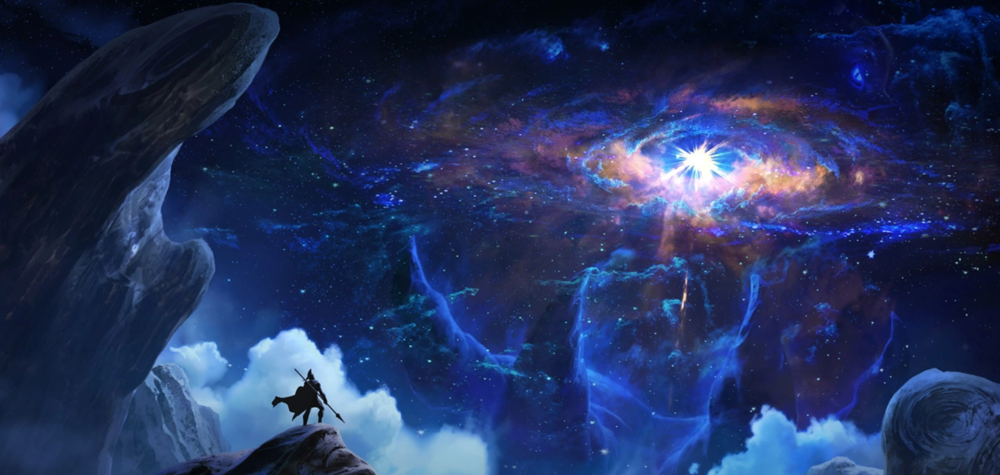

Runeterra
Runeterra (meaning magic earth) is a plane of existence composed of the physical realm: a oblate spheroid planet and the Spirit Realm. It is also the fictional world where most of the lore of the League of Legends icon.png League of Legends intellectual property takes place on. Runeterra is part of the larger linkRuneterra Prime (Universe) Runeterra Prime universe. The currently known continents the planet comprises are Valoran and Shurima. It also boasts several large bodies of water, such as the currently known 18 Seas (like the Conqueror's Sea and the Guardian's Sea), and 2 Oceans with several archipelagos and islands around them (like Ionia, Serpent Isles, and Shadow Isles). The planet revolves around a G-type star while a natural satellite moon revolves around the planet. Runeterra's sun and moon mirrored equivalents also exist in the spirit realm.
Composed of both the material and spirit realms, Runeterra is all that separates the celestial powers of creation from the abyssal threat of all undoing. This is a magical world unlike any other--inhabited by peoples both fierce and wondrou

The rune Wars
Centuries ago, magical artifacts called the 'World Runes' were rediscovered. Over the following decades, knowledge of the Runes began to spread as more were unearthed. The world's brightest minds studied the ancient glyphs, attempting to determine the powers they possessed. Few could even begin to understand the importance of their origins, or the sheer power held within them. Some surmised that the Runes were integral to the creation of Runeterra itself. The first use of these mysterious artifacts proved catastrophic, as they reshaped the landscape of entire nations. Mistrust quickly grew as those who knew of the Runes imagined such “Makers' Might” being used as a weapon. Conflicts related to these magical artifacts began to occur, known as the Rune Wars.
Open warfare raged across Runeterra. The first horrors of the Rune Wars sparked fear and aggression among those who now realized the power at their command. Ryze Ryze and his master, Tyrus, had sought out to lock away every World Rune beyond the reach of man for the protection of Runeterra. Some complied with their pleas, others dismissed them due to their new found powers and influence. After an incident with Tyrus, Ryze later on continued his journey alone in gathering all Runic artifacts so as to prevent another Rune War from starting and possibly destroying the world.